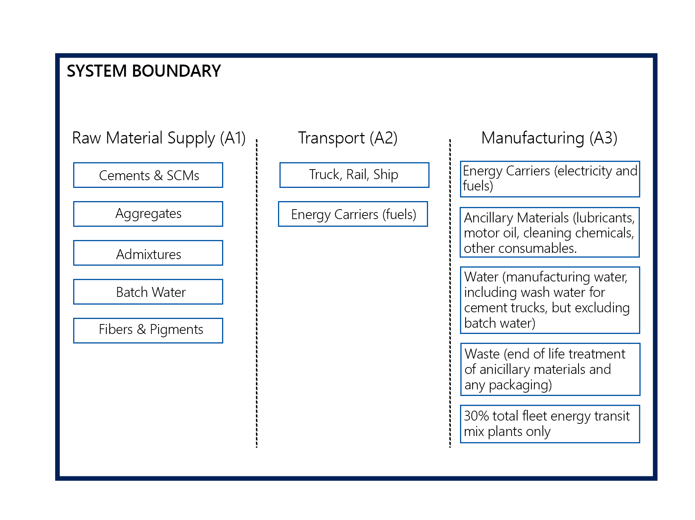

An EPD for Company123's XXX facility in City
An EPD for Company123's XXX facility in City System boundaries
System boundaries
As depicted in the figure below, this study considers a cradle-to-gate system boundary:
 Figure 11: General life cycle phases for consideration in a construction works system. The red boundary line indicates the system scope considered in this LCA/EPD
Figure 11: General life cycle phases for consideration in a construction works system. The red boundary line indicates the system scope considered in this LCA/EPD
The following three life cycle stages are included in the study: * A1: Raw material supply (upstream processes) - Extraction, handling, and processing of the materials used in manufacturing the declared products in this LCA. * A2: Transportation - Transportation of A1 materials from the supplier to the “gate” of the manufacturing facility (i.e. A3). * A3: Manufacturing (core processes)- The energy and other utility inputs used to store, move, and manufacturer the declared products and to operate the facility.
As according to the PCR, the following figure illustrates the general activities and input requirements for producing concrete products and is not necessarily exhaustive.
 Figure 12: General system inputs considered in the product system and categorized by modules A1 to A3
In addition, as according to the relevant PCR, the following requirements are excluded from this study:
- Production, manufacture and construction of A3 building/capital goods and infrastructure;
- Production and manufacture of steel production equipment, steel delivery vehicles, earthmoving equipment, and laboratory equipment;
- Personnel-related activities (travel, furniture, office supplies);
- Energy use related to company management and sales activities.
For this LCA the manufacturing plant, owned and operated by Ready Mix Inc., is located at their Lower Mainland in British Columbia, Canada. All operating data is formulated using the actual data from Ready Mix Inc.’s plant at the above location, including water, energy consumption and waste generation. All inputs for this system boundary are calculated for the plant.
This life cycle inventory was organized in a spreadsheet and was then input into an RStudio environment where pre-calculated LCIA results for relevant products/activies stemming from the ecoinvent 3.4 database and a local EPD database in combination with primary data from Ready Mix Inc. were utilzied. Explanations of the contribution of each data source to this study are outlined in the section Data Sources and Quality. Further LCI details for each declared product are provided in the sections ‘Detailed LCI tables’ and ‘Transport tables’ of the detailed LCA report. A parameter uncertainty analysis was also performed where key statistical results (e.g. min/mean/max etc.) are provided.
Cut-off criteria
ISO 14044:2006 and the focus PCR requires the LCA model to contain a minimum of 95% of the total inflows (mass and energy) to the upstream and core modules be included in this study. The cut-off criteria were applied to all other processes unless noted above as follows: * A 1% cut-off is considered for all renewable and non-renewable primary energy consumption and the total mass of inputs within a unit process where the total of the neglected inputs does not exceed 5%.